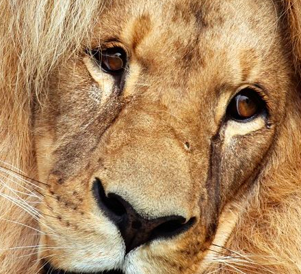
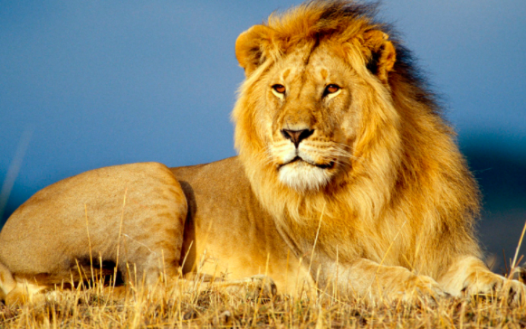
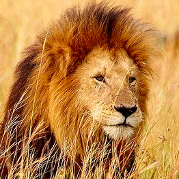
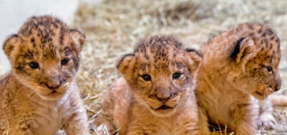
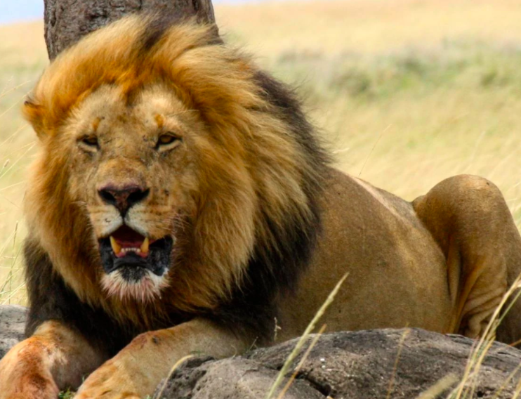
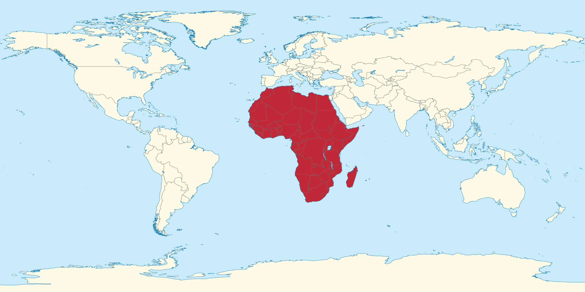

Basic Information
African lions live in Angola, Botswana, Mozambique, Tanzania, The Central African Republic, South Sudan, and other parts of Sub-Saharan Africa. They wander a territory of 100 square miles. They eat large animals that they find in the grasslands, including antelopes, zebras, and wildebeest. Lions are very social cats and live in groups called prides. Lions begin to mate around the age of 3 or 4. For the first 6 weeks of their lives, the cubs are hidden and are born around only three pounds. Lions fight with animals who are much larger than themselves. In order to do this, they use their powerful jaws to snap the prey's neck or to strangle it to death.
What is a West African Lion?
A West African Lion is a type of cat who are now highly endangered and will soon disappear from West Africa, unless conservation efforts improve. West African lions are lighter in build than the ones in East and South Africa. They appear to have longer legs, and the males have thinner manes. The are carnivorous and their predators are human. Their habitat is graddy plains and open woodlands, their life span is 10 to 14 years in the wild; up to 20 years in captivity. They weigh around 330 to 500 plus pounds. They are hunters and scavengers and West African Lions are the most social cats. Also, Lions are very affectionate. Their parenting styles are wildly different. Most times, two or more females in a pride give birth around the same time and the cubs are raised together. At times, a lion may neglect or abandon her cubs especially if food is scarce.
     Conservation
The population of lions decreased 43% in 21 years. The African Lion is regionally extinct in 7 African countries. Retaliation is the primary reason for lion killings. People are working with communities in order for them to value lions and help protect their families and livestock. from large carnivores. West African Lions are mainly endangered because of hunting, habitat loss, and diseases that can be spread from domestic dogs in villages nearby.
The West African Lion's current population is estimated at 30,000 to 100,000. By the International Union for Conservation of Nature's Red List of Threatened Species. The fate of the West African Lion will be decided in the next five years. If we want to save them, we need to do something now. There needs to be committed individuals. However, the country is lacking the individuals as well as the sufficient amount of funding needed. If both of these are gotten, then there will be hope. The secret to long-term success will be supplementing conservation dollars with an alternative revenue stream, such as the nature-based tourism that pumps billions of dollars into South and East Africa every year, Said by Henschel. The way to improve people education on this topic is to train local guards. However, we need to all stay cautiously optimistic because one day the banks might all be inspired and fund the needs that we need.